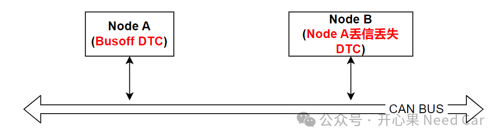

返回本专题目录工程问题：电压瞬时异常导致的busoff与通信丢失
开心果 Need Car · 2024-05-17T07:10:00+08:00 · 微信原文
付费文章：当前仅保存公开试读部分，全文尚未获取。
本文继续分享一个工程问题：CAN Transceiver电压瞬时异常（欠压）导致模式切换，节点报Busoff故障，其他节点报通信丢失，进而导致车辆功能受限的问题。问题描述：车辆动力受限，无法挂挡，最终导致KL30亏电。搜集问题信息：节点A报Busoff DTC，同网段的其他节点（eg：节点B）报与节点A的通信丢失DTC。同时，排查网段内其他故障，busoff故障发生时，同时段未见Battery（KL30）欠压故障。问题示意如下：

对于Busoff类问题，问题原因比较清楚：Node A的发送行为异常的故障，即：Node A发送的信息和自身回采的信息不一致导致的Busoff。Node B报与Node A节点通信丢失由Node A Busoff事件诱发，因此，问题锁定在排查Node A的Busoff问题即可。
那么，触发Busoff的因素可能有哪些呢？CAN H短地、CAN L短电源、CAN H/CAN L短接、波特率配置错误、网段内阻抗不匹配、软件异常等都可能导致通信丢失。但是，本文并不是如上因素造成的，那会是什么因素呢？